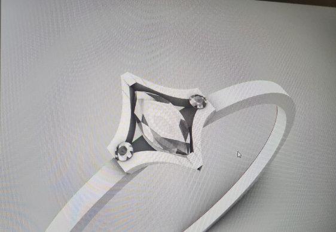
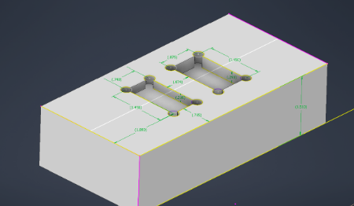
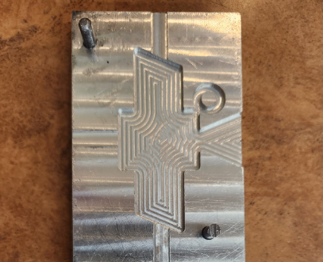

Custom design
Custom Jewelry
Designed and made custom jewelry pieces, including rings and pendants. This CAD image shows a custom ring design.
No project link provided
Selected work
A selection of custom design and manufacturing work. Photos and additional project details will be added as they become available.

Designed and made custom jewelry pieces, including rings and pendants. This CAD image shows a custom ring design.

Designed custom workholding for repeated CNC operations. The image shows a CAD model of the workholding design.

Cut custom molds for injection molding. The image shows a machined mold cavity.
Project photos are stored locally in assets/ and referenced with relative paths.